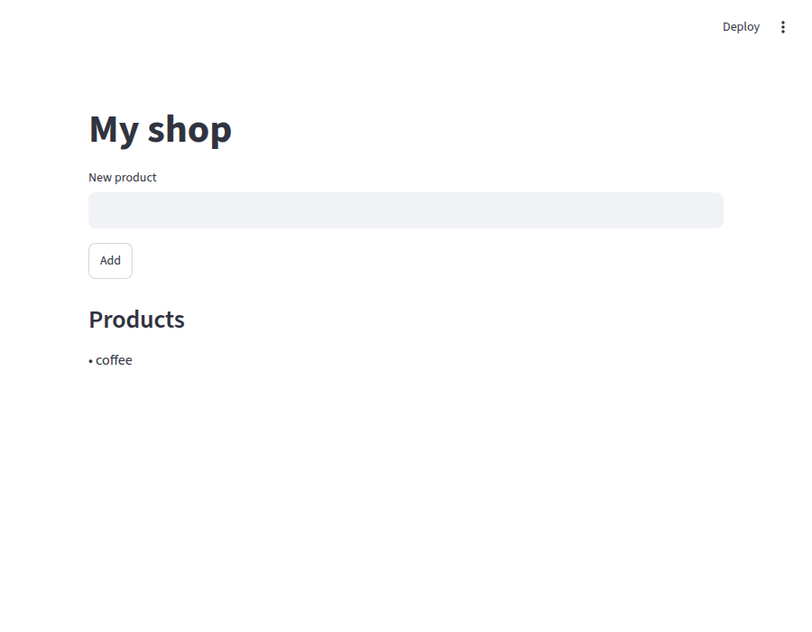

Lesson 23 — Frontend + backend + database درس ۲۳ — Frontend + backend + دیتابیس
In Lesson 22 you used your API with curl. Real users want a web page. You'll add a third service, a frontend made with Streamlit (a Python library for quick web apps), to the same project. That gives the classic three parts of a web app, each in its own container.
در درس ۲۲ با curl از API خودتان استفاده کردید. کاربران واقعی یک صفحهی وب میخواهند. یک سرویس سوم، یک frontend ساختهشده با Streamlit (یک کتابخانهی Python برای ساخت سریع برنامههای وب)، به همان پروژه اضافه میکنید. این همان سه بخش کلاسیک یک برنامهی وب است، هر کدام در کانتینر خودش.
localhost:8501ports: 8501:8501 (the only open door)(تنها در باز)frontendStreamlithttp://api:8000apiFastAPIdb:5432dbPostgreSQL · pgdata🧠 Blurred commands are ones you've already learned. Try to remember them, then click to check.
🧠 دستورهای محو را قبلاً یاد گرفتهاید. سعی کنید به یاد بیاورید، بعد کلیک کنید و ببینید.
1 A folder for the frontendیک پوشه برای frontend Doneانجام شد
Go to your project from Lesson 22, and make a frontend folder inside it. The frontend gets its own folder because it gets its own image:
به پروژهی درس ۲۲ بروید و یک پوشهی frontend داخل آن بسازید. frontend پوشهی خودش را میگیرد چون ایمیج خودش را دارد:
cd ~/shop-api
mkdir frontend2 The frontend codeکد frontend Doneانجام شد
Create frontend/requirements.txt:
frontend/requirements.txt را بسازید:
streamlit
requestsstreamlit makes the web page; requests calls your API. Now frontend/app.py:
streamlit صفحهی وب را میسازد؛ requests API شما را صدا میزند. حالا frontend/app.py:
import os
import requests
import streamlit as st
API_URL = os.environ["API_URL"]
st.title("My shop")
name = st.text_input("New product")
if st.button("Add") and name:
requests.post(f"{API_URL}/products", params={"name": name})
st.subheader("Products")
for product in requests.get(f"{API_URL}/products").json():
st.write("•", product)- It reads the API's address from the environment variable
API_URL(Lesson 11).آدرس API را از متغیر محیطیAPI_URLمیخواند (درس ۱۱). - A text box and an Add button send a
POSTto your API.یک جعبهی متن و یک دکمهی Add یک درخواستPOSTبه API شما میفرستند. - The list below shows the result of
GET /products.فهرست پایین نتیجهیGET /productsرا نشان میدهد.
3 The frontend's DockerfileDockerfile مربوط به frontend Doneانجام شد
Create frontend/Dockerfile. Same pattern as the API (Lessons 19 and 22):
frontend/Dockerfile را بسازید. همان الگوی API (درسهای ۱۹ و ۲۲):
FROM python:3.13-slim
WORKDIR /app
COPY requirements.txt .
RUN pip install -r requirements.txt
COPY . .
EXPOSE 8501
CMD ["streamlit", "run", "app.py", "--server.address", "0.0.0.0", "--server.headless", "true"]--server.address 0.0.0.0- Listen on all addresses of the container, like uvicorn's
--host 0.0.0.0(Lesson 22).روی همهی آدرسهای کانتینر گوش بده، مثل--host 0.0.0.0در uvicorn (درس ۲۲). --server.headless true- Just run the server: don't try to open a browser or ask questions inside the container.فقط سرور را اجرا کن: سعی نکن داخل کانتینر مرورگر باز کنی یا سؤال بپرسی.
Streamlit uses port 8501, hence EXPOSE 8501. Create frontend/.dockerignore so the build files stay out of this image (Lesson 20):
Streamlit از پورت 8501 استفاده میکند، برای همین EXPOSE 8501. frontend/.dockerignore را بسازید تا فایلهای ساخت بیرون از این ایمیج بمانند (درس ۲۰):
Dockerfile
.dockerignore⚠ The API's COPY . . (Lesson 22) copies all of ~/shop-api, and now that includes the frontend folder! Open ~/shop-api/.dockerignore and add a line frontend, so the API image doesn't get the frontend's files.
⚠ COPY . . در API (درس ۲۲) همهی ~/shop-api را کپی میکند، و حالا پوشهی frontend هم جزو آن است! ~/shop-api/.dockerignore را باز کنید و یک خط frontend اضافه کنید، تا ایمیج API فایلهای frontend را نگیرد.
4
Update compose.yamlبهروزرسانی compose.yaml
Doneانجام شد
Open ~/shop-api/compose.yaml. Add the frontend service at the top, and remove the ports lines from api:
~/shop-api/compose.yaml را باز کنید. سرویس frontend را در بالا اضافه کنید و خطهای ports را از api حذف کنید:
services:
frontend:
build: ./frontend
ports:
- "8501:8501"
environment:
API_URL: http://api:8000
restart: unless-stopped
api:
build: .
environment:
DATABASE_URL: postgresql://ali:secret@db:5432/shop
restart: unless-stopped
db:
image: postgres:alpine
env_file: db.env
volumes:
- pgdata:/var/lib/postgresql
volumes:
pgdata:build: ./frontend | Build this service's image from the Dockerfile in the frontend folderایمیج این سرویس را از Dockerfile داخل پوشهی frontend بساز |
"8501:8501" | Your browser reaches the frontend on localhost:8501مرورگر شما روی localhost:8501 به frontend میرسد |
API_URL: http://api:8000 | The frontend finds the API by its service name api (Lesson 13), on its own port 8000frontend، API را با نام سرویسش api (درس ۱۳) روی پورت خودش 8000 پیدا میکند |
api: no portsapi: بدون ports | Only the frontend needs the API, and it's inside the network. Your browser doesn't need to reach the API directly (same idea as db in Lesson 13)فقط frontend به API نیاز دارد و آن داخل شبکه است. مرورگر شما لازم نیست مستقیم به API برسد (همان ایدهی db در درس ۱۳) |
5 Start everythingاجرای همهچیز Doneانجام شد
docker compose up -d ✔ Image shop-api-frontend Built # your frontend image
✔ Image shop-api-api Built
✔ Network shop-api_default Created
✔ Volume shop-api_pgdata Created
✔ Container shop-api-db-1 Started
✔ Container shop-api-frontend-1 Started
✔ Container shop-api-api-1 StartedCompose built two of your own images and started three containers. Check them:
Compose دو ایمیج از خودتان را ساخت و سه کانتینر را اجرا کرد. بررسیشان کنید:
docker compose psNAME SERVICE STATUS PORTS
shop-api-api-1 api Up 7 seconds # no ports: private
shop-api-db-1 db Up 13 seconds 5432/tcp
shop-api-frontend-1 frontend Up 13 seconds 0.0.0.0:8501->8501/tcp, [::]:8501->8501/tcpThe frontend's log says it's ready (Lesson 5):
لاگ frontend میگوید آماده است (درس ۵):
docker compose logs frontendfrontend-1 | You can now view your Streamlit app in your browser.
frontend-1 |
frontend-1 | Local URL: http://localhost:8501
...6 Use your appاستفاده از برنامه Doneانجام شد
Open http://localhost:8501. Type coffee in New product and click Add:
http://localhost:8501 را باز کنید. در New product بنویسید coffee و روی Add کلیک کنید:

✅ coffee appears under Products. It traveled: browser → frontend → api → db, and back. Add a few more.
✅ coffee زیر Products ظاهر میشود. این مسیر را رفت و برگشت: مرورگر ← frontend ← api ← db. چند محصول دیگر هم اضافه کنید.
7 The API is privateAPI خصوصی است Doneانجام شد
Try to reach the API directly from your PC, like in Lesson 22:
سعی کنید مثل درس ۲۲ مستقیماً از کامپیوترتان به API برسید:
curl localhost:8000/productscurl: (7) Failed to connect to localhost port 8000 after 0 ms: Couldn't connect to server❌ From your PC, the API is unreachable, because it has no ports. Yet the web page works, because the frontend talks to api inside the project's network.
❌ از کامپیوتر شما، API در دسترس نیست، چون ports ندارد. با این حال صفحهی وب کار میکند، چون frontend داخل شبکهی پروژه با api صحبت میکند.
🔑 Open only what users need: here, just the frontend. The API and the database stay inside, where outsiders can't reach them. That's safer, and it's how real apps are deployed.
🔑 فقط چیزی را باز کنید که کاربران لازم دارند: اینجا فقط frontend. API و دیتابیس داخل میمانند، جایی که غریبهها به آنها دسترسی ندارند. این امنتر است و برنامههای واقعی همینطور منتشر میشوند.
8 Clean upتمیزکاری Doneانجام شد
Remove everything, including the data (Lesson 15):
همهچیز را حذف کنید، حتی دادهها (درس ۱۵):
docker compose down -vYour built images stay; delete them if you like: docker image rm shop-api-frontend shop-api-api.
ایمیجهای ساختهشدهی شما باقی میمانند؛ اگر خواستید حذفشان کنید: docker image rm shop-api-frontend shop-api-api.
📥 Stuck? The finished files of this lesson are in the course folder under examples/23-frontend/. Compare them with yours. Or try the finished version: go into that folder and run docker compose up -d.
📥 گیر کردهاید؟ فایلهای کامل این درس در پوشهی دوره، در examples/23-frontend/ هستند. آنها را با فایلهای خودتان مقایسه کنید. یا نسخهی کامل را امتحان کنید: به همان پوشه بروید و docker compose up -d را اجرا کنید.
✎What you builtچیزی که ساختید
frontend | Streamlit web page: your image, built from ./frontend, the only published portصفحهی وب Streamlit: ایمیج شما، ساختهشده از ./frontend، تنها پورت منتشرشده |
api | FastAPI: your image, private, reached as http://api:8000FastAPI: ایمیج شما، خصوصی، با آدرس http://api:8000 |
db | PostgreSQL: ready-made image, private, data in a volumePostgreSQL: ایمیج آماده، خصوصی، دادهها در volume |
docker compose up -d | One command builds and starts all of itیک دستور همه را میسازد و اجرا میکند |